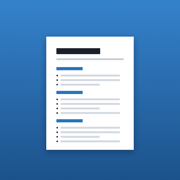

Resume Desk
Edit your resume like Google Docs, save to Files, export a real one-page PDF.
Install on this iPhone- Open this page in Safari on the iPhone.
- Tap Install, then Install on the iOS prompt.
- Find Resume Desk on the Home Screen or in the App Library.
- In the app: Open → Browse → iCloud Drive → Resumes.